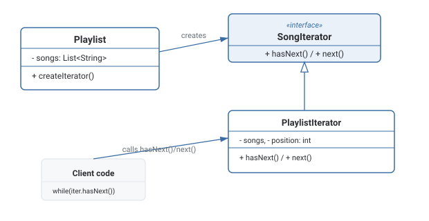

Iterator Pattern
Gives a collection a way to be traversed one element at a time through a uniform interface, without exposing how it stores its elements internally.
Theory
The problem, in plain terms
You've built a Playlist class that stores songs internally as an array. Client code that wants to loop through the songs currently has to know it's an array and use array indexing directly — playlist.songs[i]. If you later switch the internal storage to a linked list or a tree (say, to support efficient insertion in the middle), every piece of client code that iterated over playlist.songs[i] breaks, because it was relying on the internal representation rather than just "give me the songs one at a time."
Iterator solves this by giving the collection a method that returns a separate Iterator object, which exposes only hasNext() and next(). Client code loops using just those two methods, with zero knowledge of whether the underlying storage is an array, a linked list, or something else entirely. The traversal logic and position-tracking live inside the Iterator, not scattered across every piece of code that needs to loop over the collection.
How it's built
An Aggregate interface (Playlist) declares a method like createIterator() that returns an Iterator. The Iterator interface declares hasNext() and next(). A concrete iterator (PlaylistIterator) holds a reference to the collection and an internal position/cursor, incrementing it on each next() call and checking bounds in hasNext(). Client code calls iterator.hasNext() in a loop condition and iterator.next() to advance, never touching the collection's internal storage directly.
Keep the iterator's cursor state entirely inside the iterator object, not the collection — that's what lets multiple independent traversals of the same collection coexist.
Mutating the underlying collection while an iterator is mid-traversal over it — a classic "concurrent modification" bug where the iterator's assumptions no longer match the collection's real state.
Where it bites you
Most modern languages bake iteration directly into the language (for...of in JavaScript, for over anything implementing Iterable in Python/Java, range-based for in C++) via this exact pattern under the hood — so explicitly hand-rolling your own Iterator class is usually unnecessary unless you're building a custom collection type that needs to support this built-in iteration syntax. Also, if the underlying collection is mutated while an iterator is mid-traversal (elements added or removed), the iterator can behave unpredictably or throw — a real, common bug class often called "concurrent modification."
Diagram

When to Use
- You're building a custom collection type and want client code to traverse it without depending on its internal storage.
- You want to support multiple simultaneous, independent traversals of the same collection.
- You want a uniform way to traverse different collection types through the same interface.
- Your language's built-in iteration protocol already covers your case — implement that protocol instead of a bespoke Iterator class.
- The collection is simple and traversal is always the same, direct loop — a separate Iterator object adds no real value.
What interviewers are actually listening for: recognizing that Iterator is largely already built into the language you're using, and being able to explain how (Python's __iter__/__next__, Java's Iterable, JavaScript's iterables). Also, understanding the "concurrent modification" risk — mutating a collection while iterating over it is a classic bug, and knowing why it happens demonstrates real understanding rather than rote pattern recall.
Real-World Examples
- Java's
Iterable/Iteratorinterfaces — any class implementingIterablecan be used directly in a for-each loop. - Python's iterator protocol (
__iter__and__next__) — powersforloops, generators, and comprehensions. - JavaScript's iterables (
Symbol.iterator) — what makesfor...of, spread syntax, and destructuring work. - Database cursors — a result set is traversed row by row via a cursor without loading the entire result into memory at once.
- Tree/graph traversal utilities — depth-first and breadth-first iterators expose the same interface over different underlying structures.
Interview Questions
Click a question to reveal the answer.
What problem does Iterator solve?
It lets client code traverse a collection's elements one at a time using a uniform hasNext()/next() interface, without needing to know or depend on how the collection stores its elements internally. Changing the internal storage doesn't break traversal code.
How does Iterator support multiple simultaneous traversals of the same collection?
Because each iterator holds its own cursor/position state separate from the collection itself, you can create several independent iterators over the same collection, each tracking its own progress, without them interfering with each other.
Do you need to implement Iterator by hand in modern languages?
Rarely, for standard use — most modern languages have Iterator baked directly into their syntax (Python's __iter__/__next__, Java's Iterable, JavaScript's Symbol.iterator, C++ ranges), so implementing that language's iteration protocol is usually preferable to hand-rolling a custom Iterator class, unless you have a niche traversal need the built-in protocol doesn't cover.
What is "concurrent modification" and how does it relate to Iterator?
It's the bug that occurs when a collection is mutated while an iterator is mid-traversal over it — the iterator's cursor and internal assumptions about the collection's size/structure no longer match reality, which can cause skipped elements, repeated elements, or a thrown exception depending on the language/implementation.
Code & Output
Same pattern, four languages. Every output shown here was captured from a real run.